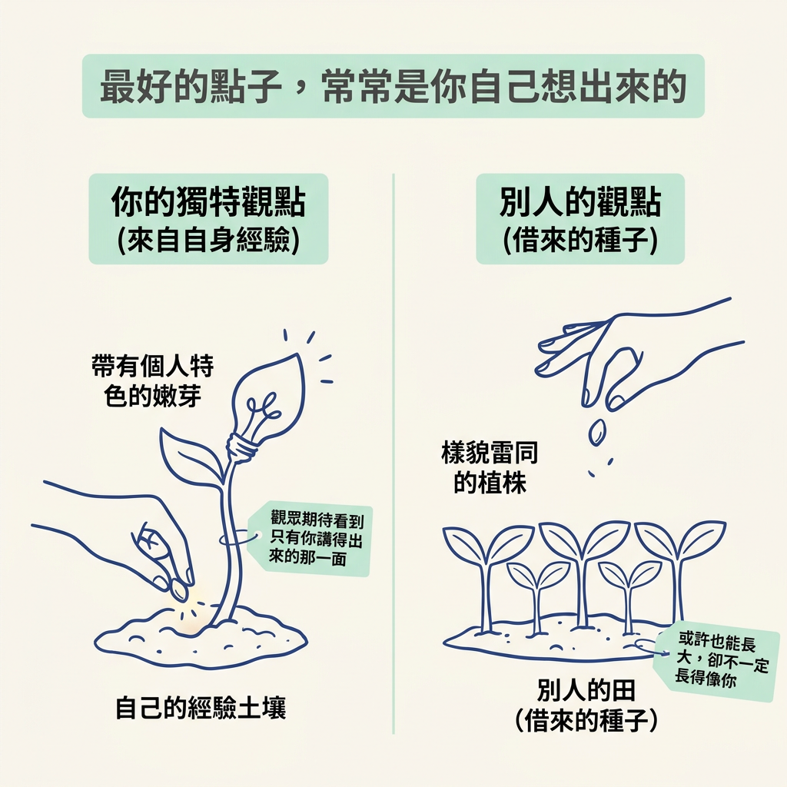
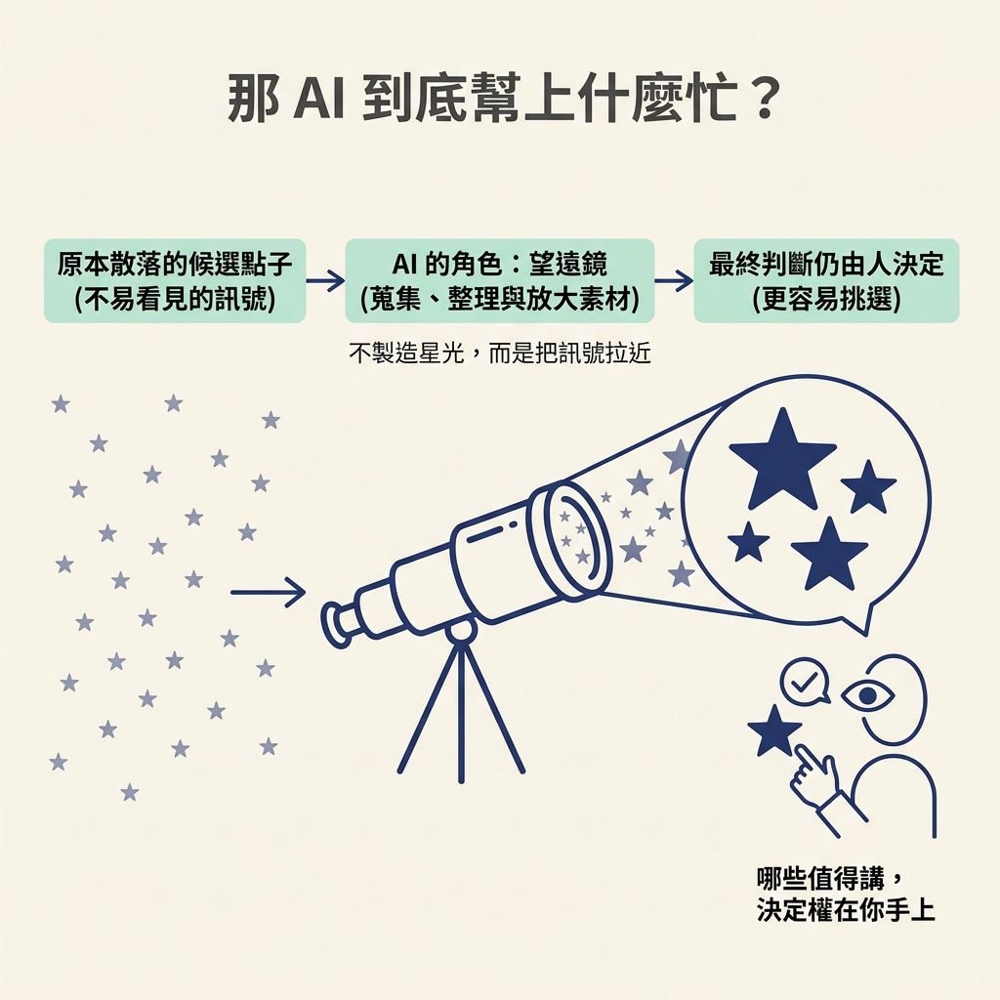

你會了解，為什麼最好的內容點子常來自自己的經驗，以及 AI agent 在發想時該扮演什麼角色。這也呼應 Content Trifecta 中的 unique：內容要有只有你才帶得出的觀點。
你已經排好發文節奏，也接受 Content Pyramid 要你先把量衝起來的建議。可是真的坐到桌前，螢幕開著、游標閃著，腦中還是冒出同一個問題：今天到底要講什麼？很多人這時會打開 AI，叫它一次列出二十個題目。
這一節先不談工具，先把點子的來源講清楚。順序一旦弄反，後面的內容產線也容易跟著歪：你可能做出「AI 想得出來，但誰來講都一樣」的內容。這正是 Content Trifecta 想避免的事。先弄清楚點子從哪裡來，後面介紹的來源和 skill 才有地方可以接上。
講師一開始提到一件容易被忽略的事：他許多最好的內容點子，都是當下想到的，完全沒有靠 AI agent。他不是要你排斥工具，只是想提醒你：好點子常帶著個人的判斷，也來自只有你會注意到的角度。
可以把點子想成種子，而你自己的經驗就是土壤。從別人的田裡拿來的種子，或許也能長大，卻不一定長得像你。觀眾追蹤的是你，也期待看到只有你講得出來的那一面。

回想 Content Trifecta 的三個面向：useful（有用）、enjoyed（讓人喜歡）和 unique（獨特）。講師把這個框架帶回點子發想，指出一件事：想清楚自己喜歡做什麼、哪些經驗只有你有，好點子就會從你的經驗和專業長出來。
useful 和 enjoyed 是你可以努力的方向；unique 卻不是光靠努力就能複製出來的，因為它和你這個人緊密相連。所以下次一時想不到題目，不妨先往自己的生活裡找：最近工作上卡在哪裡？別人曾經問過你什麼問題？你比身邊的人早一步理解了什麼？這些都是 AI 沒有的素材。
把順序弄清楚後，才輪到 AI 出場。講師說，因為我們也要提高內容產量，Claude、Codex 這類 AI agent 和平台，確實能幫你發掘（source）好點子。這裡的重點是「發掘」，不是「憑空發明」。
可以把 AI 想成望遠鏡。望遠鏡不會製造星光，而是把原本不容易看見的訊號拉近、放大，讓你更容易挑選。套用到點子發想，AI 會蒐集、整理並排序散落各處的候選點子；至於哪些值得講、要怎麼講，決定權仍在你手上。

也就是說，AI 放大你的想法，但不取代你的想法。你提供方向，例如自己的利基（專注經營的主題領域）、經驗或在意的角度，AI 就能沿著這個方向挖出新材料。如果什麼方向都不給，它就只能產生一堆誰都寫得出來的通用題目。
講師接著介紹這個模組會用到的兩種點子來源，並提醒它們不只適用於 AI 或系統工程，也能用在鉤針等不同領域。第一個是 well of knowledge，也就是你所在產業的最新消息最先出現的地方。第二個是可安裝的 skill /latest，它能把最近幾天的熱門話題整理成一批候選點子。
兩者分工不同：well of knowledge 告訴你「該盯著哪裡」，/latest 則像一台幫你追蹤資訊、整理清單的機器。先找到資訊來源，才知道要讓機器追蹤什麼。下一節就先來找這口井。
好點子從你的經驗與專業出發，這正是 Content Trifecta 中 AI 無法替你提供的 unique。要增加產量，你需要一批可以篩選的候選點子；因此，AI agent 的角色是放大器，負責依照你提供的方向蒐集、整理和排序素材，而不是代替你思考。掌握這個順序，才能避免做出誰來講都一樣的內容。
點子需要燃料，而燃料來自你持續接觸的資訊。問題是：你所在的利基，最新消息最先出現在哪裡？